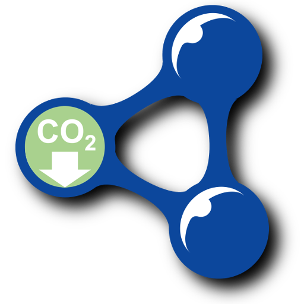

This is a walk-through of how we can build linked open data (LoD) about carbon savings from dissimilar data sources. |

|
- 1. Measurement data → CSV
- 2. Reference data → CSVs
- 3. CSVs → linked data
- 4. Using the linked data
- 5. Concluding remarks
- References
- Appendix A: Tidy CSV files
- Appendix B: Mapping files
- Appendix C: CSVW files
- Appendix D: RDF files
1. Measurement data → CSV
1.1. Sources
We take examples of meaurement data from 4 sources:
-
Alloa Community Enterprises - reused furniture
-
Stirling Community Food - redistributed food
-
Stirling Council - household recycling bins
-
The Fair Share - reused, student-oriented items.
1.2. Deriving the same information from the dissimilar sources
Their data is dissimilar, for example:
-
3rd sector reporting vs. local government reporting
-
emailed Excel files vs. CKAN hosted CSV files
-
kilograms vs. tonnes
-
various means of indicating dates
-
various ways of categorising the stuff that gets reused.
…but our end goal is to derive the same information from each of them.
This information can be seen in the carbon-savings.csv CSV file that contains the results of our efforts. Here’s a snippet of data from that file:
| occurrence-date | scottish-carbon-metric-material | tonnes-weight | enabler | enabler-specific |
|---|---|---|---|---|
2018-02-28 |
Wood |
0.385 |
Alloa Community Enterprises |
55 items of Furniture (Chair, Kitchen, Dining or Wooden) |
2021-01-29 |
Food and Drink Waste (wet AD) |
0.28012 |
Stirling Comunity Food |
Used for human-food, bio-etc & sanctuary |
2021-01-03 |
Glass (mixed colours) |
3.5 |
Stirling Council |
Balfron |
2019-12-31 |
Textiles & Footwear |
0.57644 |
The Fair Share |
autumn semester |
1.3. The process
To derive that CSV file, we do the following for each source:
-
parse the essential values out of the source files
-
derive and standardise values
-
mapping text values into controlled, canonical code lists (e.g. the Scottish Carbon Metric’s [carbon-metric] list of
materials; and our list of carbon-savingsenablerorganisations) -
appropriately scaling numbers (e.g. weight amounts to
tonnes) -
applying a standard format to dates
-
encode source-specific data that would be useful to propogate, into the
enabler-specificfield
-
-
output as CSV.
|
Our process is basically: messy data → tidy CSV data. The Tidy Data paper [tidy-data] provides good rationale for and examples of this process, generalised. |
1.4. Design decisions
-
Use The Scottish Carbon Metric [carbon-metric] as the basis for measuring carbon savings. This is refered to via the
scottish-carbon-metric-materialcolumn; and we will discuss it further in Section 2. -
Accounting & reporting procedures often batch into a single carbon-savings record, all of the instances of same material-class reuse/recycling that have occurred within an interval of time. The
occurrence-datecolumn captures the end date of those intervals. -
Include the
enabler-specificcolumn to allowenablers to: propogate additional information; and to report measurements at an additional level of granularity (see the primary key explanation, later). -
Reduce "double accounting" by trying to ensure that: the data contains no records where one carbon savings
enabler'feeds' the same reuse/recycling item to anotherenabler, within some (significant-for-use) duration.
1.5. Per-source walk-throughs
In this section we walk-through the measurement data → CSV process, for each source; outlining some per-source specifics.
1.5.1. Alloa Community Enterprises - reused furniture
Alloa Community Enterprises' (ACE) furniture reuse initiative has been running since 1984, helping prevent furniture from becoming waste. |

|
ACE is in the process of publishing its data as open data. The following samples of measurement data have been taken from a draft of that work.
Here’s a snipped image of ACE’s measurement data:

The main steps in processing ACE’s measurement data (the snippet shown above) are:
-
Parse the essential values out of columns
A-D&F -
Derive and standardise values …
-
We map each pair of
Category&Itemsvalues, to ascottish-carbon-metric-materialvalue. We build this mapping table as theace-to-carbon-metric.csvCSV file. Here’s a snippet of data from that file:category item material Furniture
Chair, Kitchen, Dining or Wooden
Wood
Soft Furniture
Mattress, single
Textiles and Footwear
-
Multiple columns
D&Fby columnCand divide by 1000, to calculate thetonnes-weightvalue. -
Map the headers of columns
D&F, to establish theoccurrence-datevalue. -
Capture furniture type & count information in the
enabler-specificvalue.
-
-
Output the end result as the CSV rows:
occurrence-date scottish-carbon-metric-material tonnes-weight enabler enabler-specific 2018-02-28
Wood
0.385
Alloa Community Enterprises
55 items of Furniture (Chair, Kitchen, Dining or Wooden)
2018-02-28
Wood
0.574
Alloa Community Enterprises
82 items of Furniture (Chair, Kitchen, Dining or Wooden)
2019-02-28
Textiles and Footwear
0.147
Alloa Community Enterprises
7 items of Soft Furniture (Mattress, single)
2019-02-28
Textiles and Footwear
0.168
Alloa Community Enterprises
8 items of Soft Furniture (Mattress, single)
1.5.2. Stirling Community Food - redistributed food
Stirling Community Food is a project that helps to reduce food waste in Stirling by collecting (from supermarkets & aggregators) excess and near-sell-by-date food, routing it away from waste bins, and making it available (for free) to the community. |

|
Stirling Community Food is in the process of publishing its data as open data. The following samples of measurement data have been taken from a draft of that work.
Here’s a snipped image of Stirling Community Food’s measurement data:

The main steps in processing Stirling Community Food’s measurement data (the snippet shown above) are:
-
Parse the essential values out of columns
A-O -
Derive and standardise values …
-
We map the 'outcomes' (i.e. how the food material got used) to a
scottish-carbon-metric-materialvalue. We build this mapping table as thestirling-community-food-to-carbon-metric.csvCSV file. Here’s the data from that file:outcome material human-food, bio-etc & sanctuary
Food and Drink Waste (wet AD)
compost-indiv
Food and Drink Waste (Composting)
-
Calaculate the total amounts of food materials for each of the outcome (converting from kgs to tonnes), to calculate the
tonnes-weightvalue. -
Interpret column
Bto establish theoccurrence-datevalue. -
Capture outcome information in the
enabler-specificvalue.
-
-
Output the end result as the CSV rows:
occurrence-date scottish-carbon-metric-material tonnes-weight enabler enabler-specific 2021-01-28
Food and Drink Waste (wet AD)
0.08761
Stirling Comunity Food
Used for human-food, bio-etc & sanctuary
2021-01-28
Food and Drink Waste (Composting)
0.00048
Stirling Comunity Food
Used for compost-indiv
2021-01-29
Food and Drink Waste (wet AD)
0.28012
Stirling Comunity Food
Used for human-food, bio-etc & sanctuary
2021-01-29
Food and Drink Waste (Composting)
0.008
Stirling Comunity Food
Used for compost-indiv
1.5.3. Stirling Council - household recycling bins
Stirling Council set a precedent by being the first (and still only) Scottish local authority to have published open data about their bin collection of household waste. |

|
The following samples of measurement data have been taken from that published data.
Here’s a snipped image of Stirling Council’s measurement data:
The main steps in processing Stirling Council’s measurement data (the snippet shown above) are:
-
Parse the essential values out of columns
B-C,E-F&H -
Derive and standardise values …
-
We map column
Eto to ascottish-carbon-metric-materialvalue. We build this mapping table as thestirling-council-to-carbon-metric.csvCSV file. Here’s a snippet of data from that file:Waste Collected material 106 Fibre (Paper & Card)
Mixed paper and board
107 Containers Stream
Average Plastics
72 Mixed Glass
Glass (mixed colours)
-
Use column
Fas thetonnes-weightvalue. -
Interpret column
Bto establish theoccurrence-datevalue. -
Note the
Routeinformation in theenabler-specificvalue.
-
-
Output the end result as the CSV rows:
occurrence-date scottish-carbon-metric-material tonnes-weight enabler enabler-specific 2021-01-03
Glass (mixed colours)
3.5
Stirling Council
Balfron
2021-01-04
Average Plastics
1.86
Stirling Council
Bridge of Allan
2021-01-10
Mixed paper and board
0.24
Stirling Council
Killearn
1.5.4. The Fair Share - reused, student-oriented items
The Fair Share is a university based, reuse store. It accepts donations of second-hand books, clothes, kitchenware, electricals, etc. and sells these to students. |

|
The Fair Share is in the process of publishing its data as open data. The following samples of measurement data have been taken from a draft of that work.
Here’s a snipped image of The fair Share’s measurement data:
The main steps in processing The Fair Share’s measurement data (the snippet shown above) are:
-
Parse the essential values out of columns
A-B, & from the worksheet name -
Derive and standardise values …
-
We map column
Bto to ascottish-carbon-metric-materialvalue. We build this mapping table as thethe-fair-share-to-carbon-metric.csvCSV file. Here’s a snippet of data from that file:(The Fair Share’s) Material material Textiles & Footwear
Textiles & Footwear
Books
Books
Aggregates
Aggregates (Rubble)
Glass
Glass (mixed colours)
Food & Drink
Food and Drink Waste (wet AD)
-
Use column
Bdivided by 1000, as thetonnes-weightvalue. -
Map the worksheet’s name to establish the
occurrence-datevalue. -
Note the university’s semester in the
enabler-specificvalue.
-
-
Output the end result as the CSV rows:
occurrence-date scottish-carbon-metric-material tonnes-weight enabler enabler-specific 2019-12-31
Textiles & Footwear
0.57644
The Fair Share
autumn semester
2019-12-31
Books
0.12203
The Fair Share
autumn semester
2019-12-31
Aggregates (Rubble)
0.05345
The Fair Share
autumn semester
2019-12-31
Glass (mixed colours)
0.02328
The Fair Share
autumn semester
2019-12-31
Food and Drink Waste (wet AD)
0.0187
The Fair Share
autumn semester
2. Reference data → CSVs
In this section we walk-through building our two reference (axiomatic) data CSVs.
2.1. Carbon metric
The carbon impact is a measure devised by Zero Waste Scotland (ZWS), to convey the whole-life carbon impact of waste, from resource extraction and manufacturing emissions, right through to waste management emissions. Its unit-of-measure is tonnes of carbon dioxide equivalent (CO2eT).
This is a reasonable basis for measuring carbon savings so we will use it as reference data.
It is defined in The Scottish Carbon Metric document [carbon-metric]. For our purpose, its key data is in table 6.2. This contains per-material weight-multipliers that can be used to calaculate CO2eT amounts.
Here’s a snipped image of that table:
This table’s data has been published as linked open data by our project, in previous work.
See the co2e-multiplier files in this Git repo. But we will redo that work here so that that we can provide an explanatory walk-through.
|
We copy the table’s data from its original PDF format into the more
tractable carbon-metric.csv CSV file.
Here’s a snippet of data from that file:
| material | multiplier |
|---|---|
Textiles |
100.00 |
Textiles and Footwear |
84.70 |
Aluminium cans and foil |
65.87 |
Footwear |
31.17 |
Mixed Cans |
27.80 |
Scrap Metal |
16.07 |
Steel Cans |
12.25 |
So, for our carbon savings data:
-
carbon-metric.csvwill be referenced as the basis for calculations. -
CO2eT will be used as the primary unit-of-measure
For example, consider 1 tonne of (used) shoes…
-
If these were landfilled at a waste site then the carbon impact would be:
(1 tonne) x (the `multiplier` value for `Footwear` from `carbon-metric.csv`) = (1 tonne) x (31.17 CO2e) = 31.17 CO2eT
-
Instead, if a reuse store sells them to its customers, it has made a carbon saving of 31.17 CO2eT.
| The term carbon saving is a little misleading. A better name for it might be carbon impact deferrals since all objects are eventually disposed of. But we won’t pursue that philosphical totality in this document. |
2.2. Enabler organisations
We describe the enabler organisations in enablers.csv.
Here’s the data from that file:
| name | latitude | longitude |
|---|---|---|
Alloa Community Enterprises |
56.122913 |
-3.781621 |
Stirling Comunity Food |
56.115672 |
-3.936217 |
Stirling Council |
56.113345 |
-3.936807 |
The Fair Share |
56.146389 |
-3.919833 |
3. CSVs → linked data
3.1. CSVs may be good enough
In Section 1 and Section 2 we re-worked the source data into CSV files with inconsistences rectified, text values mapped to cannocical code lists, and numeric & date values standardised. The resulting CSVs may not be as detailed or have all the nuances as their source data - but for the purpose of understanding carbon savings, they are easy to use, understand, consume and parse. Indeed, for many purposes and for use by non data experts, such CSVs will be good enough for publication as open data without further augmentation.
3.2. Describing our data using linked data vocabularies
Our CSVs have implicit meaning and linking. E.g.
-
an
occurrence-datevalue, implicity has the semantics of being a date -
a
carbon-metric-materialvalue in the measurements CSV, implicity is linked to the samematerialvalue in the reference data CSV.
For a standalone case study, this may be good enough but, for our data to become part of the global linked data graph [linked-data], we need to define its semantics explicitly, in standardised way. I.e. we need to describe our data using standard linked data vocabularies, to explain to everyone how to interpret our data and how it is linked to other data.
3.3. Using CSVW
CSV on the Web (CSVW) [CSVW] is a standardised mechanism for associating linked data semantics/metadata with CSV files.
It is nice because it allows us to keep our existing CSVs simple: unadulterated by linked data complications. (Although the CSVs must be of the tidy kind [tidy-data], as output from Section 1 and Section 2.)
Let’s create CSVW files to give our CSVs linked data semantics.
3.3.1. CSVW for the carbon-metric reference data
carbon-metric-metadata.json
contains the CSVW that gives linked data semantics to the
carbon-metric.csv reference data.
Its features of interest are described below.
{
"@context": "http://www.w3.org/ns/csvw",
"tableSchema": {
"columns": [{
"name": "material",
"titles": "material",
"datatype": "string", (1)
"propertyUrl": "http://datacommonsscotland.org/linked-data/property/hasMaterial" (2)
}, {
"name": "multiplier",
"titles": "multiplier",
"datatype": "decimal", (1)
"required": true, (3)
"propertyUrl": "http://datacommonsscotland.org/linked-data/property/hasMultiplier" (2)
}, {
"virtual": true, (4)
"propertyUrl": "http://www.w3.org/1999/02/22-rdf-syntax-ns#type",
"valueUrl": "http://datacommonsscotland.org/linked-data/class/carbon-metric"
}],
"primaryKey": "material", (5)
"aboutUrl": "http://datacommonsscotland.org/linked-data/entity/carbon-metric/{material}" (6)
}
}| 1 | Assign standard (XMLSchema) data types to each of the CSV’s columns. |
| 2 | Define a new RDF predicate for each of the CSV’s columns. |
| 3 | Declare the multiplier value to be mandatory. |
| 4 | Define the virtual, standard predicate rdf:type to say what class these rows are. |
| 5 | Declare the material value to be the primary key (and to be mandatory). |
| 6 | Define how to construct the URI (unique identifier) for each of the CSV’s rows. |
3.3.2. CSVW for the enablers reference data
enablers-metadata.json
contains the CSVW that gives linked data semantics to the
enablers.csv reference data.
Its new (not previously discussed) features of interest are described below.
{
"@context": "http://www.w3.org/ns/csvw",
"tableSchema": {
"columns": [{
"name": "name",
"titles": "name",
"datatype": "string",
"propertyUrl": "http://datacommonsscotland.org/linked-data/property/hasName"
}, {
"name": "latitude", (1)
"titles": "latitude",
"datatype": "decimal",
"propertyUrl": "http://datacommonsscotland.org/linked-data/property/hasLatitude"
}, {
"name": "longitude", (1)
"titles": "longitude",
"datatype": "decimal",
"propertyUrl": "http://datacommonsscotland.org/linked-data/property/hasLongitude"
}, {
"virtual": true,
"propertyUrl": "http://www.w3.org/1999/02/22-rdf-syntax-ns#type",
"valueUrl": "http://datacommonsscotland.org/linked-data/class/enablers"
}],
"primaryKey": "name",
"aboutUrl": "http://datacommonsscotland.org/linked-data/entity/enablers/{name}"
}
}| 1 | The latitude and longitude values are optional, by CSVW default. |
3.3.3. CSVW for the carbon-savings measurement data
carbon-savings-metadata.json
contains the CSVW that gives linked data semantics to the
carbon-savings.csv measurement data.
Its new (not previously discussed) features of interest are described below.
{
"@context": "http://www.w3.org/ns/csvw",
"tableSchema": {
"columns": [{
"name": "occurrenceDate",
"titles": "occurrence-date",
"datatype": "date",
"propertyUrl": "http://datacommonsscotland.org/linked-data/property/hasOccurrenceDate"
}, {
"name": "material",
"titles": "scottish-carbon-metric-material",
"datatype": "string",
"propertyUrl": "http://datacommonsscotland.org/linked-data/property/hasMaterial",
"valueUrl": "http://datacommonsscotland.org/linked-data/entity/carbon-metric/{material}" (1)
}, {
"name": "tonnesWeight",
"titles": "tonnes-weight",
"datatype": "decimal",
"required": true,
"propertyUrl": "http://datacommonsscotland.org/linked-data/property/hasTonnesWeight"
}, {
"name": "enabler",
"titles": "enabler",
"datatype": "string",
"propertyUrl": "http://datacommonsscotland.org/linked-data/property/hasEnabler",
"valueUrl": "http://datacommonsscotland.org/linked-data/entity/enablers/{enabler}" (1)
}, {
"name": "enablerSpecific",
"titles": "enabler-specific",
"datatype": "string",
"propertyUrl": "http://datacommonsscotland.org/linked-data/property/hasEnablerSpecific"
}, {
"virtual": true,
"propertyUrl": "http://www.w3.org/1999/02/22-rdf-syntax-ns#type",
"valueUrl": "http://datacommonsscotland.org/linked-data/class/carbon-savings"
}],
"primaryKey": ["occurrenceDate", "material", "enabler", "enablerSpecific"], (2)
"foreignKeys": [{
"columnReference": "material",
"reference": {
"resource": "carbon-metric.csv", (1)
"columnReference": "material"
}
}, {
"columnReference": "enabler",
"reference": {
"resource": "enablers.csv", (1)
"columnReference": "name"
}
}],
"aboutUrl": "http://datacommonsscotland.org/linked-data/entity/carbon-savings/{occurrenceDate}/{material}/{enabler}/{enablerSpecific}"
}
}3.4. Generating an RDF graph
$ ls data/
carbon-metric.csv carbon-savings.csv enablers.csv (1)
$ ls csvw/
carbon-metric-metadata.json carbon-savings-metadata.json enablers-metadata.json (1)
$ ./csv2rdf-0.4.6 -m minimal -t data/carbon-savings.csv -u csvw/carbon-savings-metadata.json -o rdf/carbon-savings.ttl (2)
$ ./csv2rdf-0.4.6 -m minimal -t data/carbon-metric.csv -u csvw/carbon-metric-metadata.json -o rdf/carbon-metric.ttl (2)
$ ./csv2rdf-0.4.6 -m minimal -t data/enablers.csv -u csvw/enablers-metadata.json -o rdf/enablers.ttl (2)
$ ls rdf/
carbon-metric.ttl carbon-savings.ttl enablers.ttl (3)| 1 | The inputs: the CSV files containing the actual data, and the CSVW files providing the linked data semantics/metadata. |
| 2 | Run the csv2rdf tool against each CSV+CSVW input pairing. |
| 3 | The output: Turtle (.ttl) files which define an RDF graph of our data:carbon-savings.ttlcarbon-metric.ttlenablers.ttl |
4. Using the linked data
4.1. Running a straightforward (SPARQL) query against the linked data
The linked data/RDF graph is defined by the Turtle files that we generated in Section 3.4. To help us examine and query that RDF graph, we load it into a graph engine (Blazegraph) that supports SPARQL queries.
First we load our Turtle files into Blazegraph’s data store:
$ java -cp blazegraph.jar com.bigdata.rdf.store.DataLoader journal.properties *.ttl
...
Reading properties: journal.properties
Will load from: carbon-metric.ttl
Will load from: carbon-savings.ttl
Will load from: enablers.ttl
...
Load: 223 stmts added in 0.251 secs, rate= 888, commitLatency=0ms, {failSet=0,goodSet=3}Then we run Blazegraph’s graph engine and SPARQL query service:
$ java -server -Xmx4g -jar blazegraph.jar
...
Welcome to the Blazegraph(tm) Database.
Go to http://192.168.1.106:9999/blazegraph/ to get started.Opening that URL in a web browser, gives us a UI allowing us to exaime and query our RDF graph:
| 1 | Enter a SPARQL query. This example finds carbon-savings records then returns the specified field values. |
| 2 | See the results of that query. |
4.2. Powering graphs with the linked data
Our prototype-6 Waste Matters Scotland webapp is powered by linked open data which was generated from larger samples of the datasets that were described in Section 1.
Let’s take a look at two of the its linked data backed graphs about carbon savings.
4.2.1. The Fair Share - its carbon savings in terms of cars
The reuse work by this small store has yielded impressive carbon savings. |
Each book, bowl, duvet, etc. reused through The Fair Share, is an item that has avoided becoming waste/pollution, and this is often estimated in terms of CO2e (the carbon savings unit-of-measure). But by themselves, CO2e values can be difficult to relate to so we convert them into in a more relatable measure: cars worth of CO2e. The average cost of using one car for one year is 4.1 tonnes of CO2e. This incorporates as exhaust emissions, fuel supply chain and amortised car material for the average UK car. (This is a rough approximation based on figures from Carbon emissions in the lifetimes of cars and OVO Energy.) So, we divide The Fair Share’s carbon savings values by 4.1 to yield our cars worth of CO2e values then use these to plot this graph. (The 2014 spike was caused by an unusually large donation of textiles (duvet covers, sheets, pillowcases) from the student halls of residence.) |
4.2.2. Alloa Community Enterprises - its carbon savings in terms of plane flights
The reuse of soft furniture (sofas, armchairs, matresses, etc.) alone (and during the short period sampled) has resulted in carbon savings equivalent to almost 5000 flights. |
Each piece of furniture that is reused through the ACE initative, is an item that has avoided becoming waste/pollution. This is often estimated in terms of CO2e (the carbon savings unit-of-measure). In Section 1.5.1 we
described how to estimate the CO2e values for ACE by multipling the total weight of the items in each furniture category by an appropriate multiplier. These multipliers can be found in the But by themselves, CO2e values can be difficult to relate to so we convert them into in a more relatable measure: flights worth of CO2e. The average cost of taking a one-way flight from Glasgow to Berlin is 202.5 kgs of CO2e. (This was derived from these OVO Energy estimations which incorporate a plane’s fuel use but not its build material.) We divide ACE’s CO2e values by 202.5 to yield our flights worth of CO2e values then use these to plot this graph. |
5. Concluding remarks
We finish with some open questions, points of interest arising, and ideas for future development.
5.1. Vocabularies, naming and structuring
Since we’re dealing with measurement data, should we adopt statistical RDF vocabularities
such as Data Cube
and SDMX? We could use these to descibe additonal aspects
of our data (e.g. to assocate material with the exact concept of SDMX’s code list; to explicitly differentiate between identification and measurement dimension; to say more about our unit of measure). However, these would complicate the data model
and, for our purpose, be more of a hinderance than a help.
CSVW bakes in support for vocabularies such as
Dublin Core
and schema.org.
This makes it convenient to add
dc:description and schema:latitude annotations/explanations to the data but,
we haven’t made use of this.
Should the class carbon-metric have been named co2e-multipler
to reflect the more specific purpose of its data?
And then, its hasMaterial property be redefined as rdfs:label?
Naming and structuring the data is very important but,
it isn’t the focus of this piece of work,
so we didn’t go all round the houses to get it right here.
5.2. Be careful when comparing
This work is exploratory and uses small, non-comparable samples of data.
If it were to be put into practice and based on fuller operational data
then this approach could be used both to highlight and, to very roughly compare the
carbon savings aspect of the enabler organisations.
When used of the latter purpose - comparison - care should be exercised
because of the dissimilar sizes of the enabler organisations and,
dissimilar types of reuse materials.
Remember too that the 3rd sector enabler organisations are not working
towards the single contractual objective of reuse
but have additional laudable social objectives such as
supportive employment, alleviating poverty, and promoting the local community.
On a more specific note about comparing:
The carbon-savings records report on different time intervals
so be careful to calculate comparable (say, per-day) amounts from the records.
5.3. Support needed for composition, revision and provenance
As data becomes available, it should be possible to compose it into an accumulation of open linked data about carbon savings.
Compose scenarios include:
-
New data becoming available out-of-order.
-
New data revising old data.
-
New data conflicting with old data, where new and old have different provenances.
There are many approaches (temporal databases, distributed ledgers, linked data event streams) and interesting solutions (Fluree; TREE; even Git to some extent), that claim to support those compose scenarios and their related concerns (including ordering, durability, availablity, identity, consensus, and branching).
However, using any of them would be future work.
5.4. Future development?
Would it be useful to develop the ideas from this exploratory walk through, into a prototype app for collecting and publishing carbon savings data? Maybe …if the focus were to be on 3rd sector and other non-government organisations - since government organisations already have outlets which publish their reuse data, such as SEPA, statistics.gov.scot and council websites.
We might build a (prototype) app which will allow organisations to: upload their carbon savings data; validate it; compose and accumulate it; and publish it as open linked data. The drivers of this work would be two-fold: Firstly, to highlight the carbon savings achievements (and other facets) of 3rd sector reuse orgs. Secondly (and more academically), to explore how linked open data concepts and technology can be practically applied to a (worthy) case-study.
References
-
[carbon-metric] Zero Waste Scotland. The Scottish Carbon Metric. 2011.
-
[tidy-data] Hadley Wickham. Tidy data. 2014.
-
[linked-data] Tim Berners-Lee. Linked Data. 2006.
-
[CSVW] W3C. CSV on the Web: A Primer. 2016.
Appendix A: Tidy CSV files
carbon-savings.csv
occurrence-date,scottish-carbon-metric-material,tonnes-weight,enabler,enabler-specific
2018-02-28,Wood,0.385,"Alloa Community Enterprises","55 items of Furniture (Chair, Kitchen, Dining or Wooden)"
2018-02-28,Wood,0.574,"Alloa Community Enterprises","82 items of Furniture (Chair, Kitchen, Dining or Wooden)"
2019-02-28,"Textiles and Footwear",0.147,"Alloa Community Enterprises","7 items of Soft Furniture (Mattress, single)"
2019-02-28,"Textiles and Footwear",0.168,"Alloa Community Enterprises","8 items of Soft Furniture (Mattress, single)"
2021-01-28,"Food and Drink Waste (wet AD)",0.08761,"Stirling Comunity Food","Used for human-food, bio-etc & sanctuary"
2021-01-28,"Food and Drink Waste (Composting)",0.00048,"Stirling Comunity Food","Used for compost-indiv"
2021-01-29,"Food and Drink Waste (wet AD)",0.28012,"Stirling Comunity Food","Used for human-food, bio-etc & sanctuary"
2021-01-29,"Food and Drink Waste (Composting)",0.008,"Stirling Comunity Food","Used for compost-indiv"
2021-01-03,"Glass (mixed colours)",3.5,"Stirling Council","Balfron"
2021-01-04,"Average Plastics",1.86,"Stirling Council","Bridge of Allan"
2021-01-10,"Mixed paper and board",0.24,"Stirling Council","Killearn"
2019-12-31,"Textiles & Footwear",0.57644,"The Fair Share","autumn semester"
2019-12-31,Books,0.12203,"The Fair Share","autumn semester"
2019-12-31,"Aggregates (Rubble)",0.05345,"The Fair Share","autumn semester"
2019-12-31,"Glass (mixed colours)",0.02328,"The Fair Share","autumn semester"
2019-12-31,"Food and Drink Waste (wet AD)",0.0187,"The Fair Share","autumn semester"carbon-metric.csv
material,multiplier
"Textiles",100.00
"Textiles and Footwear",84.70
"Aluminium cans and foil",65.87
"Footwear",31.17
"Mixed Cans",27.80
"Scrap Metal",16.07
"Steel Cans",12.25
"PET (including forming)",12.12
"WEEE - Small",10.54
"WEEE - Mixed",9.77
"WEEE - Large",9.00
"PS (including forming)",8.81
"Wood",8.70
"Average Plastics",8.57
"Average plastic rigid (including bottles)",8.56
"HDPE (including forming)",8.25
"LDPE and LLDPE (including forming)",7.80
"Average plastic film (including bags)",7.65
"PP (including forming)",6.74
"PVC (including forming)",6.31
"Board",5.83
"Mixed paper and board",5.68
"Paper",5.23
"Books",5.23
"Mineral Oil",5.15
"WEEE - Fridges and Freezers",4.66
"Food and Drink Waste (wet AD)",4.35
"Food and Drink Waste (Composting)",3.48
"Batteries (Post Consumer Non Automotive)",3.46
"Glass (colour separated)",2.78
"Mixed Food and Garden Waste (dry AD)",2.70
"Garden Waste (dry AD)",2.35
"Mixed Food and Garden Waste (Composting)",2.10
"Garden Waste Composting",1.81
"Glass (mixed colours)",1.58
"Plasterboard",0.99
"Aggregates (Rubble)",0.03enablers.csv
name,latitude,longitude
"Alloa Community Enterprises",56.122913,-3.781621
"Stirling Comunity Food",56.115672,-3.936217
"Stirling Council",56.113345,-3.936807
"The Fair Share",56.146389,-3.919833Appendix B: Mapping files
ace-to-carbon-metric.csv
category,item,material
Furniture ,"Bedside unit, cabinet or table",Wood
Furniture ,"Bench, kitchen or garden, solid wood",Wood
Furniture ,"Blanket box, Ottoman",Wood
Furniture ,Bookcase / Shelving Unit,Wood
Furniture ,"Cabinet (display & kitchen), Bureau",Wood
Furniture ,"Chair, Kitchen, Dining or Wooden",Wood
Furniture ,"Chest-of-Drawers, Tallboy",Wood
Furniture ,"Small Desk, Computer Table",Wood
Furniture ,Large Desk,Wood
Furniture ,Dressing table ,Wood
Furniture ,Fire surround ,Wood
Furniture ,Grandfather clock ,Wood
Furniture ,Headboard unit (with built-in bedside cabinets) ,Wood
Furniture ,Headboard,Wood
Furniture ,TV / Hi-fi unit ,Wood
Furniture ,Piano,Wood
Furniture ,"Sideboard, not large ",Wood
Furniture ,"Table small eg. Cane, coffee, occassional, nest of ",Wood
Furniture ,"Table, large e.g. dining",Wood
Furniture ,"Table, medium e.g. kitchen",Wood
Furniture ,Wall unit,Wood
Furniture ,"Wardrobe, double ",Wood
Furniture ,"Wardrobe, single ",Wood
Furniture ,Welsh Dresser ,Wood
Home Office Furniture ,"Cabinet, large",Scrap Metal
Home Office Furniture ,"Filing cabinet, large ",Scrap Metal
Home Office Furniture ,"Cabinet or filing cabinet, small",Scrap Metal
Home Office Furniture ,Office Chair ,Wood
Home Office Furniture ,Office Desk ,Wood
Soft Furniture ,2 seater sofa,Textiles and Footwear
Soft Furniture ,3 seater sofa,Textiles and Footwear
Soft Furniture ,Armchair ,Textiles and Footwear
Soft Furniture ,Recliner,Textiles and Footwear
Soft Furniture ,"Bed, single complete (base, mattress + headboard) ",Textiles and Footwear
Soft Furniture ,"Bed, double complete (base, mattress + headboard) ",Textiles and Footwear
Soft Furniture ,"Bed, king-size complete (base, mattress + headboard) ",Textiles and Footwear
Soft Furniture ,"Bed base, single wood / divan / folding / Z bed ",Wood
Soft Furniture ,"Bed base, double wood / divan / folding / Z bed ",Wood
Soft Furniture ,"Bed base, king-size wood, divan or double metal ",Wood
Soft Furniture ,Bunk bed / cabin bed ,Wood
Soft Furniture ,"Cane chair, bookcase",Wood
Soft Furniture ,"Chair, easy, fireside, lounge, rocking",Wood
Soft Furniture ,Chaise Longue ,Wood
Soft Furniture ,Futon / Sofabed (wooden base with mattress) ,Textiles and Footwear
Soft Furniture ,"Mattress, single ",Textiles and Footwear
Soft Furniture ,"Mattress, double ",Textiles and Footwear
Soft Furniture ,"Mattress, king-size ",Textiles and Footwear
Soft Furniture ,Pouffe / Stool,Textiles and Footwear
Soft Furniture ,"Sofa bed, foam flop out ",Textiles and Footwear
Soft Furniture ,"Sofa bed, metal frame ",Scrap Metal
Soft Furniture ,"Sofa, cane / conservatory (normally with cushions) ",Wood
Bric-a-Brac,Bric-a-Brac (small packet) ,Average Plastics
Bric-a-Brac,Bric-a-Brac (box) ,Scrap Metal
Children's Items,Cot ,Wood
Children's Items,High Chair,Wood
Children's Items,Pram,Scrap Metal
Children's Items,Pushchair,Scrap Metal
Children's Items,Stairgate,Average Plastics
Children's Items,"Toys, box",Average Plastics
Leisure,"Bike, adult",Scrap Metal
Leisure,"Bike, child",Scrap Metal
Miscellaneous,"Small misc, eg scales, saucepans, shoe racks, pedal bin, picture, magazine rack, fireguard, CD stand, picture frame, curtain pole, lampshade, suitcase, wine rack, Christmas tree",Wood
Miscellaneous,"Medium misc, eg tea trolley, ironing board, plant stand, coat or hat stand, small mirror, clothes horse, ",Wood
Miscellaneous,"Large misc, eg carpet cleaner, large mirror, ladder, laundry basket, loose shelves",Wood
Flooring,"Carpet tiles, lino, carpet, flooring or underlay for standard room 12'x12'",Textiles and Footwear
Flooring,Small rug 3'x6',Textiles and Footwear
Bedding & window dressings,"Pillow, pillow case",Textiles
Bedding & window dressings,Sheet,Textiles
Bedding & window dressings,"Blanket, towel, throw, duvet cover",Textiles
Bedding & window dressings,"Blinds (fabric), light or mid weight curtains",Textiles
Bedding & window dressings,"Blinds (wood, metal), curtains (thick, lined)",Textiles
Bathroom Items ,Bath (metal) ,Scrap Metal
Bathroom Items ,Bath (non-metal) ,Average plastic rigid (including bottles)
Bathroom Items ,Bathroom Cabinet /Shower Screen,Average plastic rigid (including bottles)
Bathroom Items ,Cistern ,Plasterboard
Bathroom Items ,Shower equipment/tray ,Plasterboard
Bathroom Items ,Sink (ceramic) ,Plasterboard
Bathroom Items ,Sink (metal) ,Scrap Metal
Bathroom Items ,Toilet ,Plasterboard
Bathroom Items ,"Vanity Unit, including sink ",Wood
DIY,Door (pvc),PVC (including forming)
DIY,Door (wood) ,Wood
DIY,Gate (metal) ,Scrap Metal
DIY,Gate (wood),Wood
DIY,Paint (5l),Batteries (Post Consumer Non Automotive)
DIY,Patio door,PVC (including forming)
DIY,"Tiles (ceramic), per square metre",Plasterboard
DIY,Window (wood),Wood
DIY,Window (glazed),PVC (including forming)
DIY,Worktop (kitchen) ,Wood
Garden,BBQ,Scrap Metal
Garden,"Chair (metal, plastic or wood)",PVC (including forming)
Garden,Lounger ,PVC (including forming)
Garden,Rotary Drier ,Scrap Metal
Garden,"Table (metal, plastic or wood)",PVC (including forming)
Garden,"Tool (large) i.e. spade, fork",Scrap Metal
Garden,Tool (small) i.e. trowel,Scrap Metal
Garden,Waterbutt,PVC (including forming)
Garden,Wheelbarrow ,Scrap Metal
Gas Appliances,"Cooker, gas",WEEE - Large
Gas Appliances,"Hob, gas",WEEE - Large
Gas Appliances,"Fire, gas",WEEE - Large
Cat 1 - Large Household Appliances,"Baby belling, counter top cooker, hostess trolley ",WEEE - Large
Cat 1 - Large Household Appliances,Cooker hood,WEEE - Large
Cat 1 - Large Household Appliances,"Cooker, electric ",WEEE - Large
Cat 1 - Large Household Appliances,Dishwasher ,WEEE - Large
Cat 1 - Large Household Appliances,Spin-Dryer ,WEEE - Large
Cat 1 - Large Household Appliances,Tumble-Dryer ,WEEE - Large
Cat 1 - Large Household Appliances,Twin-tub ,WEEE - Large
Cat 1 - Large Household Appliances,Washer Drier,WEEE - Large
Cat 1 - Large Household Appliances,Washing Machine ,WEEE - Large
Cat 2 - Small Household Appliances,Electric sewing maching,WEEE - Small
Cat 2 - Small Household Appliances,Fan (electric) ,WEEE - Small
Cat 2 - Small Household Appliances,Fan heater,WEEE - Small
Cat 2 - Small Household Appliances,Fire,WEEE - Small
Cat 2 - Small Household Appliances,"Hair & Beauty Elec i.e. hair dryer, foot massager, hair curlers, hair straighteners",WEEE - Small
Cat 2 - Small Household Appliances,"Hob, electric",WEEE - Small
Cat 2 - Small Household Appliances,"Medium elec - bread machine, video camera, trouser press",WEEE - Small
Cat 2 - Small Household Appliances,Microwave ,WEEE - Small
Cat 2 - Small Household Appliances,Radiator,WEEE - Small
Cat 2 - Small Household Appliances,"Small elec - kettle, toaster, clock, sandwich maker,coffee maker, juicer, rice cooker ,steamer, iron, food mixer",WEEE - Small
Cat 2 - Small Household Appliances,Vacuum ,WEEE - Small
Cat 3 - IT & Telecommunications,"Computer, base unit",WEEE - Mixed
Cat 3 - IT & Telecommunications,Laptop,WEEE - Mixed
Cat 3 - IT & Telecommunications,"Mobile Phone & Accessories (hands free kit, charger)",WEEE - Mixed
Cat 3 - IT & Telecommunications,"PC Accessories (keyboard, mouse)",WEEE - Mixed
Cat 3 - IT & Telecommunications,"PC Printers, Scanners, Shredder",WEEE - Mixed
Cat 3 - IT & Telecommunications,Photocopier ,WEEE - Mixed
Cat 3 - IT & Telecommunications,Telecommunications equipment,WEEE - Mixed
Cat 3 - IT & Telecommunications,"Wordprocessor, Electric Typewriter",WEEE - Mixed
Cat 4 - Consumer Equipment,"Hi-fi, integrated",WEEE - Mixed
Cat 4 - Consumer Equipment,"Hi-fi, separates (amplifier, cassette deck, CD player, radio, speakers)",WEEE - Mixed
Cat 4 - Consumer Equipment,"Video, DVD, Games Consoles, Digiboxes",WEEE - Mixed
Cat 5 - Lighting Equipment,Lamp / Light,WEEE - Mixed
Cat 6 - Electrical & Electronic Tools,"Garden tools, electrical (small) i.e. strimmer, hedge cutter, garden vac",WEEE - Mixed
Cat 6 - Electrical & Electronic Tools,"Garden tools, electrical (large) i.e. lawnmower, shredder",WEEE - Mixed
Cat 6 - Electrical & Electronic Tools,"Power Tools i.e. drill, electric screwdriver",WEEE - Mixed
"Cat 7 - Toys, leisure & sports","Musical Instruments i.e. keyboard, organ",WEEE - Mixed
"Cat 7 - Toys, leisure & sports",Sunbed,WEEE - Large
Cat 8 - Medical devices,Electric Armchair,WEEE - Large
Cat 8 - Medical devices,"Electric Bed, double",WEEE - Large
Cat 8 - Medical devices,"Electric Bed, single",WEEE - Large
Cat 8 - Medical devices,Electric Wheelchair,WEEE - Large
Cat 11 - Display Equipment,"CRT-Monitor <14"" ",WEEE - Mixed
Cat 11 - Display Equipment,"CRT-Monitor 14"" ",WEEE - Mixed
Cat 11 - Display Equipment,"CRT-Monitor 15"" ",WEEE - Mixed
Cat 11 - Display Equipment,"CRT-Monitor 17"" ",WEEE - Mixed
Cat 11 - Display Equipment,"CRT-Monitor 19"" ",WEEE - Mixed
Cat 11 - Display Equipment,"CRT-Monitor 21"" ",WEEE - Mixed
Cat 11 - Display Equipment,TV Portable or TV Combi,WEEE - Mixed
Cat 11 - Display Equipment,"Flat screen display 15-17""",WEEE - Mixed
Cat 11 - Display Equipment,"Flat screen display 19-20""",WEEE - Mixed
Cat 11 - Display Equipment,"Flat screen display 22-24""",WEEE - Mixed
Cat 11 - Display Equipment,"Flat screen display 26-30""",WEEE - Mixed
Cat 11 - Display Equipment,"Flat screen display 32-37""",WEEE - Mixed
Cat 11 - Display Equipment,"Flat screen display 40-46""",WEEE - Mixed
Cat 12 - Cooling Appliances containing refrigeration,"Air Conditioner, Dehumidifier",WEEE - Mixed
Cat 12 - Cooling Appliances containing refrigeration,"Freezer, chest ",WEEE - Fridges and Freezers
Cat 12 - Cooling Appliances containing refrigeration,"Freezer, free standing",WEEE - Fridges and Freezers
Cat 12 - Cooling Appliances containing refrigeration,"Freezer / Fridge, table top",WEEE - Fridges and Freezers
Cat 12 - Cooling Appliances containing refrigeration,"Freezer, undercounter",WEEE - Fridges and Freezers
Cat 12 - Cooling Appliances containing refrigeration,"Fridge, free standing",WEEE - Fridges and Freezers
Cat 12 - Cooling Appliances containing refrigeration,"Fridge, undercounter",WEEE - Fridges and Freezers
Cat 12 - Cooling Appliances containing refrigeration,Fridge-Freezer ,WEEE - Fridges and Freezersstirling-community-food-to-carbon-metric.csv
outcome,material
"human-food, bio-etc & sanctuary","Food and Drink Waste (wet AD)"
compost-indiv,"Food and Drink Waste (Composting)"stirling-council-to-carbon-metric.csv
"Waste Collected",material
"02 Garden Waste","Mixed Food and Garden Waste (Composting)"
"105 Mixed Paper","Paper"
"106 Fibre (Paper & Card)","Mixed paper and board"
"107 Containers Stream","Average Plastics"
"108 Comingled Organic","Mixed Food and Garden Waste (dry AD)"
"17 Cardboard","Mixed paper and board"
"72 Mixed Glass","Glass (mixed colours)"the-fair-share-to-carbon-metric.csv
"(The Fair Share's) Material",material
"Textiles & Footwear","Textiles & Footwear"
Books,Books
Aggregates,"Aggregates (Rubble)"
Glass,"Glass (mixed colours)"
"Food & Drink","Food and Drink Waste (wet AD)"Appendix C: CSVW files
carbon-savings-metadata.json
{
"@context": "http://www.w3.org/ns/csvw",
"tableSchema": {
"columns": [{
"name": "occurrenceDate",
"titles": "occurrence-date",
"datatype": "date",
"propertyUrl": "http://datacommonsscotland.org/linked-data/property/hasOccurrenceDate"
}, {
"name": "material",
"titles": "scottish-carbon-metric-material",
"datatype": "string",
"propertyUrl": "http://datacommonsscotland.org/linked-data/property/hasMaterial",
"valueUrl": "http://datacommonsscotland.org/linked-data/entity/carbon-metric/{material}"
}, {
"name": "tonnesWeight",
"titles": "tonnes-weight",
"datatype": "decimal",
"required": true,
"propertyUrl": "http://datacommonsscotland.org/linked-data/property/hasTonnesWeight"
}, {
"name": "enabler",
"titles": "enabler",
"datatype": "string",
"propertyUrl": "http://datacommonsscotland.org/linked-data/property/hasEnabler",
"valueUrl": "http://datacommonsscotland.org/linked-data/entity/enablers/{enabler}"
}, {
"name": "enablerSpecific",
"titles": "enabler-specific",
"datatype": "string",
"propertyUrl": "http://datacommonsscotland.org/linked-data/property/hasEnablerSpecific"
}, {
"virtual": true,
"propertyUrl": "http://www.w3.org/1999/02/22-rdf-syntax-ns#type",
"valueUrl": "http://datacommonsscotland.org/linked-data/class/carbon-savings"
}],
"primaryKey": ["occurrenceDate", "material", "enabler", "enablerSpecific"],
"foreignKeys": [{
"columnReference": "material",
"reference": {
"resource": "carbon-metric.csv",
"columnReference": "material"
}
}, {
"columnReference": "enabler",
"reference": {
"resource": "enablers.csv",
"columnReference": "name"
}
}],
"aboutUrl": "http://datacommonsscotland.org/linked-data/entity/carbon-savings/{occurrenceDate}/{material}/{enabler}/{enablerSpecific}"
}
}carbon-metric-metadata.json
{
"@context": "http://www.w3.org/ns/csvw",
"tableSchema": {
"columns": [{
"name": "material",
"titles": "material",
"datatype": "string",
"propertyUrl": "http://datacommonsscotland.org/linked-data/property/hasMaterial"
}, {
"name": "multiplier",
"titles": "multiplier",
"datatype": "decimal",
"required": true,
"propertyUrl": "http://datacommonsscotland.org/linked-data/property/hasMultiplier"
}, {
"virtual": true,
"propertyUrl": "http://www.w3.org/1999/02/22-rdf-syntax-ns#type",
"valueUrl": "http://datacommonsscotland.org/linked-data/class/carbon-metric"
}],
"primaryKey": "material",
"aboutUrl": "http://datacommonsscotland.org/linked-data/entity/carbon-metric/{material}"
}
}enablers-metadata.json
{
"@context": "http://www.w3.org/ns/csvw",
"tableSchema": {
"columns": [{
"name": "name",
"titles": "name",
"datatype": "string",
"propertyUrl": "http://datacommonsscotland.org/linked-data/property/hasName"
}, {
"name": "latitude",
"titles": "latitude",
"datatype": "decimal",
"propertyUrl": "http://datacommonsscotland.org/linked-data/property/hasLatitude"
}, {
"name": "longitude",
"titles": "longitude",
"datatype": "decimal",
"propertyUrl": "http://datacommonsscotland.org/linked-data/property/hasLongitude"
}, {
"virtual": true,
"propertyUrl": "http://www.w3.org/1999/02/22-rdf-syntax-ns#type",
"valueUrl": "http://datacommonsscotland.org/linked-data/class/enablers"
}],
"primaryKey": "name",
"aboutUrl": "http://datacommonsscotland.org/linked-data/entity/enablers/{name}"
}
}Appendix D: RDF files
carbon-savings.ttl
<http://datacommonsscotland.org/linked-data/entity/carbon-savings/2018-02-28/Wood/Alloa%20Community%20Enterprises/55%20items%20of%20Furniture%20%28Chair%2C%20Kitchen%2C%20Dining%20or%20Wooden%29>
a <http://datacommonsscotland.org/linked-data/class/carbon-savings>;
<http://datacommonsscotland.org/linked-data/property/hasEnabler> <http://datacommonsscotland.org/linked-data/entity/enablers/Alloa%20Community%20Enterprises>;
<http://datacommonsscotland.org/linked-data/property/hasEnablerSpecific> "55 items of Furniture (Chair, Kitchen, Dining or Wooden)";
<http://datacommonsscotland.org/linked-data/property/hasMaterial> <http://datacommonsscotland.org/linked-data/entity/carbon-metric/Wood>;
<http://datacommonsscotland.org/linked-data/property/hasOccurrenceDate> "2018-02-28"^^<http://www.w3.org/2001/XMLSchema#date>;
<http://datacommonsscotland.org/linked-data/property/hasTonnesWeight> 0.385 .
<http://datacommonsscotland.org/linked-data/entity/carbon-savings/2018-02-28/Wood/Alloa%20Community%20Enterprises/82%20items%20of%20Furniture%20%28Chair%2C%20Kitchen%2C%20Dining%20or%20Wooden%29>
a <http://datacommonsscotland.org/linked-data/class/carbon-savings>;
<http://datacommonsscotland.org/linked-data/property/hasEnabler> <http://datacommonsscotland.org/linked-data/entity/enablers/Alloa%20Community%20Enterprises>;
<http://datacommonsscotland.org/linked-data/property/hasEnablerSpecific> "82 items of Furniture (Chair, Kitchen, Dining or Wooden)";
<http://datacommonsscotland.org/linked-data/property/hasMaterial> <http://datacommonsscotland.org/linked-data/entity/carbon-metric/Wood>;
<http://datacommonsscotland.org/linked-data/property/hasOccurrenceDate> "2018-02-28"^^<http://www.w3.org/2001/XMLSchema#date>;
<http://datacommonsscotland.org/linked-data/property/hasTonnesWeight> 0.574 .
<http://datacommonsscotland.org/linked-data/entity/carbon-savings/2019-02-28/Textiles%20and%20Footwear/Alloa%20Community%20Enterprises/7%20items%20of%20Soft%20Furniture%20%28Mattress%2C%20single%29>
a <http://datacommonsscotland.org/linked-data/class/carbon-savings>;
<http://datacommonsscotland.org/linked-data/property/hasEnabler> <http://datacommonsscotland.org/linked-data/entity/enablers/Alloa%20Community%20Enterprises>;
<http://datacommonsscotland.org/linked-data/property/hasEnablerSpecific> "7 items of Soft Furniture (Mattress, single)";
<http://datacommonsscotland.org/linked-data/property/hasMaterial> <http://datacommonsscotland.org/linked-data/entity/carbon-metric/Textiles%20and%20Footwear>;
<http://datacommonsscotland.org/linked-data/property/hasOccurrenceDate> "2019-02-28"^^<http://www.w3.org/2001/XMLSchema#date>;
<http://datacommonsscotland.org/linked-data/property/hasTonnesWeight> 0.147 .
<http://datacommonsscotland.org/linked-data/entity/carbon-savings/2019-02-28/Textiles%20and%20Footwear/Alloa%20Community%20Enterprises/8%20items%20of%20Soft%20Furniture%20%28Mattress%2C%20single%29>
a <http://datacommonsscotland.org/linked-data/class/carbon-savings>;
<http://datacommonsscotland.org/linked-data/property/hasEnabler> <http://datacommonsscotland.org/linked-data/entity/enablers/Alloa%20Community%20Enterprises>;
<http://datacommonsscotland.org/linked-data/property/hasEnablerSpecific> "8 items of Soft Furniture (Mattress, single)";
<http://datacommonsscotland.org/linked-data/property/hasMaterial> <http://datacommonsscotland.org/linked-data/entity/carbon-metric/Textiles%20and%20Footwear>;
<http://datacommonsscotland.org/linked-data/property/hasOccurrenceDate> "2019-02-28"^^<http://www.w3.org/2001/XMLSchema#date>;
<http://datacommonsscotland.org/linked-data/property/hasTonnesWeight> 0.168 .
<http://datacommonsscotland.org/linked-data/entity/carbon-savings/2021-01-28/Food%20and%20Drink%20Waste%20%28wet%20AD%29/Stirling%20Comunity%20Food/Used%20for%20human-food%2C%20bio-etc%20%26%20sanctuary>
a <http://datacommonsscotland.org/linked-data/class/carbon-savings>;
<http://datacommonsscotland.org/linked-data/property/hasEnabler> <http://datacommonsscotland.org/linked-data/entity/enablers/Stirling%20Comunity%20Food>;
<http://datacommonsscotland.org/linked-data/property/hasEnablerSpecific> "Used for human-food, bio-etc & sanctuary";
<http://datacommonsscotland.org/linked-data/property/hasMaterial> <http://datacommonsscotland.org/linked-data/entity/carbon-metric/Food%20and%20Drink%20Waste%20%28wet%20AD%29>;
<http://datacommonsscotland.org/linked-data/property/hasOccurrenceDate> "2021-01-28"^^<http://www.w3.org/2001/XMLSchema#date>;
<http://datacommonsscotland.org/linked-data/property/hasTonnesWeight> 0.08761 .
<http://datacommonsscotland.org/linked-data/entity/carbon-savings/2021-01-28/Food%20and%20Drink%20Waste%20%28Composting%29/Stirling%20Comunity%20Food/Used%20for%20compost-indiv>
a <http://datacommonsscotland.org/linked-data/class/carbon-savings>;
<http://datacommonsscotland.org/linked-data/property/hasEnabler> <http://datacommonsscotland.org/linked-data/entity/enablers/Stirling%20Comunity%20Food>;
<http://datacommonsscotland.org/linked-data/property/hasEnablerSpecific> "Used for compost-indiv";
<http://datacommonsscotland.org/linked-data/property/hasMaterial> <http://datacommonsscotland.org/linked-data/entity/carbon-metric/Food%20and%20Drink%20Waste%20%28Composting%29>;
<http://datacommonsscotland.org/linked-data/property/hasOccurrenceDate> "2021-01-28"^^<http://www.w3.org/2001/XMLSchema#date>;
<http://datacommonsscotland.org/linked-data/property/hasTonnesWeight> 0.00048 .
<http://datacommonsscotland.org/linked-data/entity/carbon-savings/2021-01-29/Food%20and%20Drink%20Waste%20%28wet%20AD%29/Stirling%20Comunity%20Food/Used%20for%20human-food%2C%20bio-etc%20%26%20sanctuary>
a <http://datacommonsscotland.org/linked-data/class/carbon-savings>;
<http://datacommonsscotland.org/linked-data/property/hasEnabler> <http://datacommonsscotland.org/linked-data/entity/enablers/Stirling%20Comunity%20Food>;
<http://datacommonsscotland.org/linked-data/property/hasEnablerSpecific> "Used for human-food, bio-etc & sanctuary";
<http://datacommonsscotland.org/linked-data/property/hasMaterial> <http://datacommonsscotland.org/linked-data/entity/carbon-metric/Food%20and%20Drink%20Waste%20%28wet%20AD%29>;
<http://datacommonsscotland.org/linked-data/property/hasOccurrenceDate> "2021-01-29"^^<http://www.w3.org/2001/XMLSchema#date>;
<http://datacommonsscotland.org/linked-data/property/hasTonnesWeight> 0.28012 .
<http://datacommonsscotland.org/linked-data/entity/carbon-savings/2021-01-29/Food%20and%20Drink%20Waste%20%28Composting%29/Stirling%20Comunity%20Food/Used%20for%20compost-indiv>
a <http://datacommonsscotland.org/linked-data/class/carbon-savings>;
<http://datacommonsscotland.org/linked-data/property/hasEnabler> <http://datacommonsscotland.org/linked-data/entity/enablers/Stirling%20Comunity%20Food>;
<http://datacommonsscotland.org/linked-data/property/hasEnablerSpecific> "Used for compost-indiv";
<http://datacommonsscotland.org/linked-data/property/hasMaterial> <http://datacommonsscotland.org/linked-data/entity/carbon-metric/Food%20and%20Drink%20Waste%20%28Composting%29>;
<http://datacommonsscotland.org/linked-data/property/hasOccurrenceDate> "2021-01-29"^^<http://www.w3.org/2001/XMLSchema#date>;
<http://datacommonsscotland.org/linked-data/property/hasTonnesWeight> 0.008 .
<http://datacommonsscotland.org/linked-data/entity/carbon-savings/2021-01-03/Glass%20%28mixed%20colours%29/Stirling%20Council/Balfron>
a <http://datacommonsscotland.org/linked-data/class/carbon-savings>;
<http://datacommonsscotland.org/linked-data/property/hasEnabler> <http://datacommonsscotland.org/linked-data/entity/enablers/Stirling%20Council>;
<http://datacommonsscotland.org/linked-data/property/hasEnablerSpecific> "Balfron";
<http://datacommonsscotland.org/linked-data/property/hasMaterial> <http://datacommonsscotland.org/linked-data/entity/carbon-metric/Glass%20%28mixed%20colours%29>;
<http://datacommonsscotland.org/linked-data/property/hasOccurrenceDate> "2021-01-03"^^<http://www.w3.org/2001/XMLSchema#date>;
<http://datacommonsscotland.org/linked-data/property/hasTonnesWeight> 3.5 .
<http://datacommonsscotland.org/linked-data/entity/carbon-savings/2021-01-04/Average%20Plastics/Stirling%20Council/Bridge%20of%20Allan>
a <http://datacommonsscotland.org/linked-data/class/carbon-savings>;
<http://datacommonsscotland.org/linked-data/property/hasEnabler> <http://datacommonsscotland.org/linked-data/entity/enablers/Stirling%20Council>;
<http://datacommonsscotland.org/linked-data/property/hasEnablerSpecific> "Bridge of Allan";
<http://datacommonsscotland.org/linked-data/property/hasMaterial> <http://datacommonsscotland.org/linked-data/entity/carbon-metric/Average%20Plastics>;
<http://datacommonsscotland.org/linked-data/property/hasOccurrenceDate> "2021-01-04"^^<http://www.w3.org/2001/XMLSchema#date>;
<http://datacommonsscotland.org/linked-data/property/hasTonnesWeight> 1.86 .
<http://datacommonsscotland.org/linked-data/entity/carbon-savings/2021-01-10/Mixed%20paper%20and%20board/Stirling%20Council/Killearn>
a <http://datacommonsscotland.org/linked-data/class/carbon-savings>;
<http://datacommonsscotland.org/linked-data/property/hasEnabler> <http://datacommonsscotland.org/linked-data/entity/enablers/Stirling%20Council>;
<http://datacommonsscotland.org/linked-data/property/hasEnablerSpecific> "Killearn";
<http://datacommonsscotland.org/linked-data/property/hasMaterial> <http://datacommonsscotland.org/linked-data/entity/carbon-metric/Mixed%20paper%20and%20board>;
<http://datacommonsscotland.org/linked-data/property/hasOccurrenceDate> "2021-01-10"^^<http://www.w3.org/2001/XMLSchema#date>;
<http://datacommonsscotland.org/linked-data/property/hasTonnesWeight> 0.24 .
<http://datacommonsscotland.org/linked-data/entity/carbon-savings/2019-12-31/Textiles%20%26%20Footwear/The%20Fair%20Share/autumn%20semester>
a <http://datacommonsscotland.org/linked-data/class/carbon-savings>;
<http://datacommonsscotland.org/linked-data/property/hasEnabler> <http://datacommonsscotland.org/linked-data/entity/enablers/The%20Fair%20Share>;
<http://datacommonsscotland.org/linked-data/property/hasEnablerSpecific> "autumn semester";
<http://datacommonsscotland.org/linked-data/property/hasMaterial> <http://datacommonsscotland.org/linked-data/entity/carbon-metric/Textiles%20%26%20Footwear>;
<http://datacommonsscotland.org/linked-data/property/hasOccurrenceDate> "2019-12-31"^^<http://www.w3.org/2001/XMLSchema#date>;
<http://datacommonsscotland.org/linked-data/property/hasTonnesWeight> 0.57644 .
<http://datacommonsscotland.org/linked-data/entity/carbon-savings/2019-12-31/Books/The%20Fair%20Share/autumn%20semester>
a <http://datacommonsscotland.org/linked-data/class/carbon-savings>;
<http://datacommonsscotland.org/linked-data/property/hasEnabler> <http://datacommonsscotland.org/linked-data/entity/enablers/The%20Fair%20Share>;
<http://datacommonsscotland.org/linked-data/property/hasEnablerSpecific> "autumn semester";
<http://datacommonsscotland.org/linked-data/property/hasMaterial> <http://datacommonsscotland.org/linked-data/entity/carbon-metric/Books>;
<http://datacommonsscotland.org/linked-data/property/hasOccurrenceDate> "2019-12-31"^^<http://www.w3.org/2001/XMLSchema#date>;
<http://datacommonsscotland.org/linked-data/property/hasTonnesWeight> 0.12203 .
<http://datacommonsscotland.org/linked-data/entity/carbon-savings/2019-12-31/Aggregates%20%28Rubble%29/The%20Fair%20Share/autumn%20semester>
a <http://datacommonsscotland.org/linked-data/class/carbon-savings>;
<http://datacommonsscotland.org/linked-data/property/hasEnabler> <http://datacommonsscotland.org/linked-data/entity/enablers/The%20Fair%20Share>;
<http://datacommonsscotland.org/linked-data/property/hasEnablerSpecific> "autumn semester";
<http://datacommonsscotland.org/linked-data/property/hasMaterial> <http://datacommonsscotland.org/linked-data/entity/carbon-metric/Aggregates%20%28Rubble%29>;
<http://datacommonsscotland.org/linked-data/property/hasOccurrenceDate> "2019-12-31"^^<http://www.w3.org/2001/XMLSchema#date>;
<http://datacommonsscotland.org/linked-data/property/hasTonnesWeight> 0.05345 .
<http://datacommonsscotland.org/linked-data/entity/carbon-savings/2019-12-31/Glass%20%28mixed%20colours%29/The%20Fair%20Share/autumn%20semester>
a <http://datacommonsscotland.org/linked-data/class/carbon-savings>;
<http://datacommonsscotland.org/linked-data/property/hasEnabler> <http://datacommonsscotland.org/linked-data/entity/enablers/The%20Fair%20Share>;
<http://datacommonsscotland.org/linked-data/property/hasEnablerSpecific> "autumn semester";
<http://datacommonsscotland.org/linked-data/property/hasMaterial> <http://datacommonsscotland.org/linked-data/entity/carbon-metric/Glass%20%28mixed%20colours%29>;
<http://datacommonsscotland.org/linked-data/property/hasOccurrenceDate> "2019-12-31"^^<http://www.w3.org/2001/XMLSchema#date>;
<http://datacommonsscotland.org/linked-data/property/hasTonnesWeight> 0.02328 .
<http://datacommonsscotland.org/linked-data/entity/carbon-savings/2019-12-31/Food%20and%20Drink%20Waste%20%28wet%20AD%29/The%20Fair%20Share/autumn%20semester>
a <http://datacommonsscotland.org/linked-data/class/carbon-savings>;
<http://datacommonsscotland.org/linked-data/property/hasEnabler> <http://datacommonsscotland.org/linked-data/entity/enablers/The%20Fair%20Share>;
<http://datacommonsscotland.org/linked-data/property/hasEnablerSpecific> "autumn semester";
<http://datacommonsscotland.org/linked-data/property/hasMaterial> <http://datacommonsscotland.org/linked-data/entity/carbon-metric/Food%20and%20Drink%20Waste%20%28wet%20AD%29>;
<http://datacommonsscotland.org/linked-data/property/hasOccurrenceDate> "2019-12-31"^^<http://www.w3.org/2001/XMLSchema#date>;
<http://datacommonsscotland.org/linked-data/property/hasTonnesWeight> 0.0187 .carbon-metric.ttl
<http://datacommonsscotland.org/linked-data/entity/carbon-metric/Textiles> a <http://datacommonsscotland.org/linked-data/class/carbon-metric>;
<http://datacommonsscotland.org/linked-data/property/hasMaterial> "Textiles";
<http://datacommonsscotland.org/linked-data/property/hasMultiplier> 100.0 .
<http://datacommonsscotland.org/linked-data/entity/carbon-metric/Textiles%20and%20Footwear>
a <http://datacommonsscotland.org/linked-data/class/carbon-metric>;
<http://datacommonsscotland.org/linked-data/property/hasMaterial> "Textiles and Footwear";
<http://datacommonsscotland.org/linked-data/property/hasMultiplier> 84.7 .
<http://datacommonsscotland.org/linked-data/entity/carbon-metric/Aluminium%20cans%20and%20foil>
a <http://datacommonsscotland.org/linked-data/class/carbon-metric>;
<http://datacommonsscotland.org/linked-data/property/hasMaterial> "Aluminium cans and foil";
<http://datacommonsscotland.org/linked-data/property/hasMultiplier> 65.87 .
<http://datacommonsscotland.org/linked-data/entity/carbon-metric/Footwear> a <http://datacommonsscotland.org/linked-data/class/carbon-metric>;
<http://datacommonsscotland.org/linked-data/property/hasMaterial> "Footwear";
<http://datacommonsscotland.org/linked-data/property/hasMultiplier> 31.17 .
<http://datacommonsscotland.org/linked-data/entity/carbon-metric/Mixed%20Cans> a <http://datacommonsscotland.org/linked-data/class/carbon-metric>;
<http://datacommonsscotland.org/linked-data/property/hasMaterial> "Mixed Cans";
<http://datacommonsscotland.org/linked-data/property/hasMultiplier> 27.8 .
<http://datacommonsscotland.org/linked-data/entity/carbon-metric/Scrap%20Metal> a
<http://datacommonsscotland.org/linked-data/class/carbon-metric>;
<http://datacommonsscotland.org/linked-data/property/hasMaterial> "Scrap Metal";
<http://datacommonsscotland.org/linked-data/property/hasMultiplier> 16.07 .
<http://datacommonsscotland.org/linked-data/entity/carbon-metric/Steel%20Cans> a <http://datacommonsscotland.org/linked-data/class/carbon-metric>;
<http://datacommonsscotland.org/linked-data/property/hasMaterial> "Steel Cans";
<http://datacommonsscotland.org/linked-data/property/hasMultiplier> 12.25 .
<http://datacommonsscotland.org/linked-data/entity/carbon-metric/PET%20%28including%20forming%29>
a <http://datacommonsscotland.org/linked-data/class/carbon-metric>;
<http://datacommonsscotland.org/linked-data/property/hasMaterial> "PET (including forming)";
<http://datacommonsscotland.org/linked-data/property/hasMultiplier> 12.12 .
<http://datacommonsscotland.org/linked-data/entity/carbon-metric/WEEE%20-%20Small>
a <http://datacommonsscotland.org/linked-data/class/carbon-metric>;
<http://datacommonsscotland.org/linked-data/property/hasMaterial> "WEEE - Small";
<http://datacommonsscotland.org/linked-data/property/hasMultiplier> 10.54 .
<http://datacommonsscotland.org/linked-data/entity/carbon-metric/WEEE%20-%20Mixed>
a <http://datacommonsscotland.org/linked-data/class/carbon-metric>;
<http://datacommonsscotland.org/linked-data/property/hasMaterial> "WEEE - Mixed";
<http://datacommonsscotland.org/linked-data/property/hasMultiplier> 9.77 .
<http://datacommonsscotland.org/linked-data/entity/carbon-metric/WEEE%20-%20Large>
a <http://datacommonsscotland.org/linked-data/class/carbon-metric>;
<http://datacommonsscotland.org/linked-data/property/hasMaterial> "WEEE - Large";
<http://datacommonsscotland.org/linked-data/property/hasMultiplier> 9.0 .
<http://datacommonsscotland.org/linked-data/entity/carbon-metric/PS%20%28including%20forming%29>
a <http://datacommonsscotland.org/linked-data/class/carbon-metric>;
<http://datacommonsscotland.org/linked-data/property/hasMaterial> "PS (including forming)";
<http://datacommonsscotland.org/linked-data/property/hasMultiplier> 8.81 .
<http://datacommonsscotland.org/linked-data/entity/carbon-metric/Wood> a <http://datacommonsscotland.org/linked-data/class/carbon-metric>;
<http://datacommonsscotland.org/linked-data/property/hasMaterial> "Wood";
<http://datacommonsscotland.org/linked-data/property/hasMultiplier> 8.7 .
<http://datacommonsscotland.org/linked-data/entity/carbon-metric/Average%20Plastics>
a <http://datacommonsscotland.org/linked-data/class/carbon-metric>;
<http://datacommonsscotland.org/linked-data/property/hasMaterial> "Average Plastics";
<http://datacommonsscotland.org/linked-data/property/hasMultiplier> 8.57 .
<http://datacommonsscotland.org/linked-data/entity/carbon-metric/Average%20plastic%20rigid%20%28including%20bottles%29>
a <http://datacommonsscotland.org/linked-data/class/carbon-metric>;
<http://datacommonsscotland.org/linked-data/property/hasMaterial> "Average plastic rigid (including bottles)";
<http://datacommonsscotland.org/linked-data/property/hasMultiplier> 8.56 .
<http://datacommonsscotland.org/linked-data/entity/carbon-metric/HDPE%20%28including%20forming%29>
a <http://datacommonsscotland.org/linked-data/class/carbon-metric>;
<http://datacommonsscotland.org/linked-data/property/hasMaterial> "HDPE (including forming)";
<http://datacommonsscotland.org/linked-data/property/hasMultiplier> 8.25 .
<http://datacommonsscotland.org/linked-data/entity/carbon-metric/LDPE%20and%20LLDPE%20%28including%20forming%29>
a <http://datacommonsscotland.org/linked-data/class/carbon-metric>;
<http://datacommonsscotland.org/linked-data/property/hasMaterial> "LDPE and LLDPE (including forming)";
<http://datacommonsscotland.org/linked-data/property/hasMultiplier> 7.8 .
<http://datacommonsscotland.org/linked-data/entity/carbon-metric/Average%20plastic%20film%20%28including%20bags%29>
a <http://datacommonsscotland.org/linked-data/class/carbon-metric>;
<http://datacommonsscotland.org/linked-data/property/hasMaterial> "Average plastic film (including bags)";
<http://datacommonsscotland.org/linked-data/property/hasMultiplier> 7.65 .
<http://datacommonsscotland.org/linked-data/entity/carbon-metric/PP%20%28including%20forming%29>
a <http://datacommonsscotland.org/linked-data/class/carbon-metric>;
<http://datacommonsscotland.org/linked-data/property/hasMaterial> "PP (including forming)";
<http://datacommonsscotland.org/linked-data/property/hasMultiplier> 6.74 .
<http://datacommonsscotland.org/linked-data/entity/carbon-metric/PVC%20%28including%20forming%29>
a <http://datacommonsscotland.org/linked-data/class/carbon-metric>;
<http://datacommonsscotland.org/linked-data/property/hasMaterial> "PVC (including forming)";
<http://datacommonsscotland.org/linked-data/property/hasMultiplier> 6.31 .
<http://datacommonsscotland.org/linked-data/entity/carbon-metric/Board> a <http://datacommonsscotland.org/linked-data/class/carbon-metric>;
<http://datacommonsscotland.org/linked-data/property/hasMaterial> "Board";
<http://datacommonsscotland.org/linked-data/property/hasMultiplier> 5.83 .
<http://datacommonsscotland.org/linked-data/entity/carbon-metric/Mixed%20paper%20and%20board>
a <http://datacommonsscotland.org/linked-data/class/carbon-metric>;
<http://datacommonsscotland.org/linked-data/property/hasMaterial> "Mixed paper and board";
<http://datacommonsscotland.org/linked-data/property/hasMultiplier> 5.68 .
<http://datacommonsscotland.org/linked-data/entity/carbon-metric/Paper> a <http://datacommonsscotland.org/linked-data/class/carbon-metric>;
<http://datacommonsscotland.org/linked-data/property/hasMaterial> "Paper";
<http://datacommonsscotland.org/linked-data/property/hasMultiplier> 5.23 .
<http://datacommonsscotland.org/linked-data/entity/carbon-metric/Books> a <http://datacommonsscotland.org/linked-data/class/carbon-metric>;
<http://datacommonsscotland.org/linked-data/property/hasMaterial> "Books";
<http://datacommonsscotland.org/linked-data/property/hasMultiplier> 5.23 .
<http://datacommonsscotland.org/linked-data/entity/carbon-metric/Mineral%20Oil> a
<http://datacommonsscotland.org/linked-data/class/carbon-metric>;
<http://datacommonsscotland.org/linked-data/property/hasMaterial> "Mineral Oil";
<http://datacommonsscotland.org/linked-data/property/hasMultiplier> 5.15 .
<http://datacommonsscotland.org/linked-data/entity/carbon-metric/WEEE%20-%20Fridges%20and%20Freezers>
a <http://datacommonsscotland.org/linked-data/class/carbon-metric>;
<http://datacommonsscotland.org/linked-data/property/hasMaterial> "WEEE - Fridges and Freezers";
<http://datacommonsscotland.org/linked-data/property/hasMultiplier> 4.66 .
<http://datacommonsscotland.org/linked-data/entity/carbon-metric/Food%20and%20Drink%20Waste%20%28wet%20AD%29>
a <http://datacommonsscotland.org/linked-data/class/carbon-metric>;
<http://datacommonsscotland.org/linked-data/property/hasMaterial> "Food and Drink Waste (wet AD)";
<http://datacommonsscotland.org/linked-data/property/hasMultiplier> 4.35 .
<http://datacommonsscotland.org/linked-data/entity/carbon-metric/Food%20and%20Drink%20Waste%20%28Composting%29>
a <http://datacommonsscotland.org/linked-data/class/carbon-metric>;
<http://datacommonsscotland.org/linked-data/property/hasMaterial> "Food and Drink Waste (Composting)";
<http://datacommonsscotland.org/linked-data/property/hasMultiplier> 3.48 .
<http://datacommonsscotland.org/linked-data/entity/carbon-metric/Batteries%20%28Post%20Consumer%20Non%20Automotive%29>
a <http://datacommonsscotland.org/linked-data/class/carbon-metric>;
<http://datacommonsscotland.org/linked-data/property/hasMaterial> "Batteries (Post Consumer Non Automotive)";
<http://datacommonsscotland.org/linked-data/property/hasMultiplier> 3.46 .
<http://datacommonsscotland.org/linked-data/entity/carbon-metric/Glass%20%28colour%20separated%29>
a <http://datacommonsscotland.org/linked-data/class/carbon-metric>;
<http://datacommonsscotland.org/linked-data/property/hasMaterial> "Glass (colour separated)";
<http://datacommonsscotland.org/linked-data/property/hasMultiplier> 2.78 .
<http://datacommonsscotland.org/linked-data/entity/carbon-metric/Mixed%20Food%20and%20Garden%20Waste%20%28dry%20AD%29>
a <http://datacommonsscotland.org/linked-data/class/carbon-metric>;
<http://datacommonsscotland.org/linked-data/property/hasMaterial> "Mixed Food and Garden Waste (dry AD)";
<http://datacommonsscotland.org/linked-data/property/hasMultiplier> 2.7 .
<http://datacommonsscotland.org/linked-data/entity/carbon-metric/Garden%20Waste%20%28dry%20AD%29>
a <http://datacommonsscotland.org/linked-data/class/carbon-metric>;
<http://datacommonsscotland.org/linked-data/property/hasMaterial> "Garden Waste (dry AD)";
<http://datacommonsscotland.org/linked-data/property/hasMultiplier> 2.35 .
<http://datacommonsscotland.org/linked-data/entity/carbon-metric/Mixed%20Food%20and%20Garden%20Waste%20%28Composting%29>
a <http://datacommonsscotland.org/linked-data/class/carbon-metric>;
<http://datacommonsscotland.org/linked-data/property/hasMaterial> "Mixed Food and Garden Waste (Composting)";
<http://datacommonsscotland.org/linked-data/property/hasMultiplier> 2.1 .
<http://datacommonsscotland.org/linked-data/entity/carbon-metric/Garden%20Waste%20Composting>
a <http://datacommonsscotland.org/linked-data/class/carbon-metric>;
<http://datacommonsscotland.org/linked-data/property/hasMaterial> "Garden Waste Composting";
<http://datacommonsscotland.org/linked-data/property/hasMultiplier> 1.81 .
<http://datacommonsscotland.org/linked-data/entity/carbon-metric/Glass%20%28mixed%20colours%29>
a <http://datacommonsscotland.org/linked-data/class/carbon-metric>;
<http://datacommonsscotland.org/linked-data/property/hasMaterial> "Glass (mixed colours)";
<http://datacommonsscotland.org/linked-data/property/hasMultiplier> 1.58 .
<http://datacommonsscotland.org/linked-data/entity/carbon-metric/Plasterboard> a <http://datacommonsscotland.org/linked-data/class/carbon-metric>;
<http://datacommonsscotland.org/linked-data/property/hasMaterial> "Plasterboard";
<http://datacommonsscotland.org/linked-data/property/hasMultiplier> 0.99 .
<http://datacommonsscotland.org/linked-data/entity/carbon-metric/Aggregates%20%28Rubble%29>
a <http://datacommonsscotland.org/linked-data/class/carbon-metric>;
<http://datacommonsscotland.org/linked-data/property/hasMaterial> "Aggregates (Rubble)";
<http://datacommonsscotland.org/linked-data/property/hasMultiplier> 0.03 .enablers.ttl
<http://datacommonsscotland.org/linked-data/entity/enablers/Alloa%20Community%20Enterprises>
a <http://datacommonsscotland.org/linked-data/class/enablers>;
<http://datacommonsscotland.org/linked-data/property/hasLatitude> 56.122913;
<http://datacommonsscotland.org/linked-data/property/hasLongitude> -3.781621;
<http://datacommonsscotland.org/linked-data/property/hasName> "Alloa Community Enterprises" .
<http://datacommonsscotland.org/linked-data/entity/enablers/Stirling%20Comunity%20Food>
a <http://datacommonsscotland.org/linked-data/class/enablers>;
<http://datacommonsscotland.org/linked-data/property/hasLatitude> 56.115672;
<http://datacommonsscotland.org/linked-data/property/hasLongitude> -3.936217;
<http://datacommonsscotland.org/linked-data/property/hasName> "Stirling Comunity Food" .
<http://datacommonsscotland.org/linked-data/entity/enablers/Stirling%20Council> a
<http://datacommonsscotland.org/linked-data/class/enablers>;
<http://datacommonsscotland.org/linked-data/property/hasLatitude> 56.113345;
<http://datacommonsscotland.org/linked-data/property/hasLongitude> -3.936807;
<http://datacommonsscotland.org/linked-data/property/hasName> "Stirling Council" .
<http://datacommonsscotland.org/linked-data/entity/enablers/The%20Fair%20Share> a
<http://datacommonsscotland.org/linked-data/class/enablers>;
<http://datacommonsscotland.org/linked-data/property/hasLatitude> 56.146389;
<http://datacommonsscotland.org/linked-data/property/hasLongitude> -3.919833;
<http://datacommonsscotland.org/linked-data/property/hasName> "The Fair Share" .